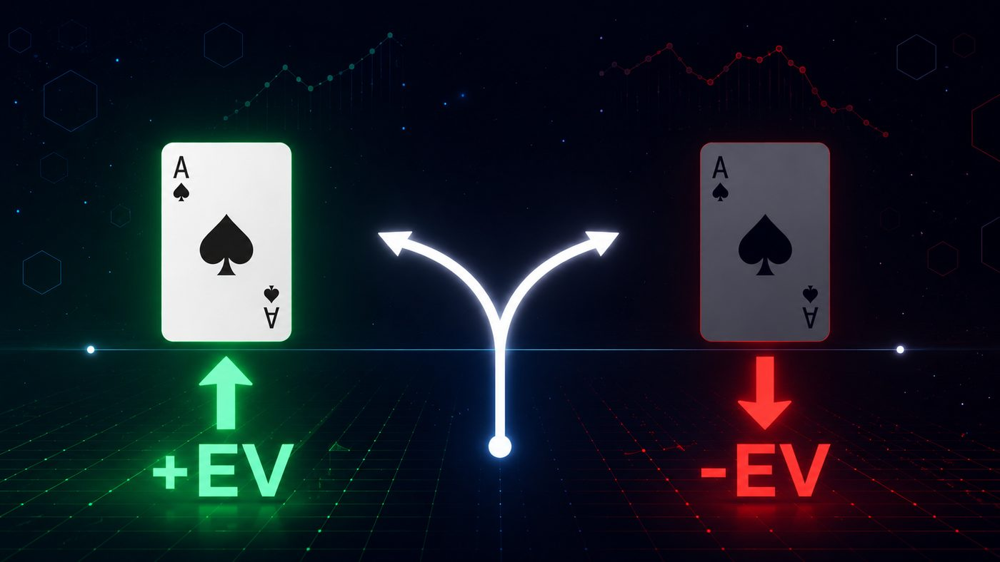
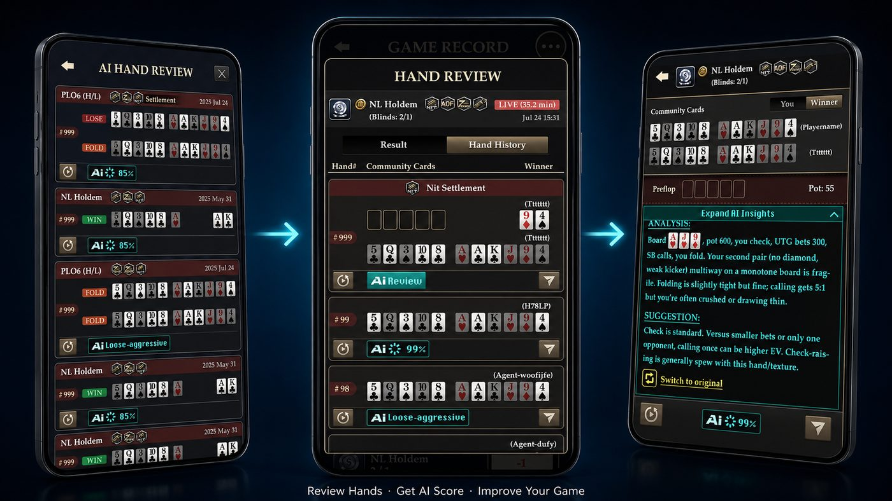

Stop Guessing Why You Lost. Start Knowing.
Most poker players replay losing hands in their head after a session and come to the wrong conclusion. They blame the cards, the timing, or the opponent — when the real issue was a decision made three streets earlier that they'll never review.
Pokerrrr 2's AI Hand Review changes that. After your private Holdem or PLO session, every hand you played is logged in your Game Record. Pull up any hand and the AI breaks down each action — what you did, what the EV-maximizing line was, and what the gap between the two cost you.
No guessing. No selective memory. Objective feedback on every decision you made.
What AI Hand Review Actually Does
The feature sits inside your Game Record — accessible directly from the game lobby after any private Holdem or PLO session.
Your last 20 hands are stored and available for review. Select any hand and the AI analysis expands to show:
- Action-by-action breakdown — pre-flop through river, every bet, call, fold, and raise evaluated
- EV feedback — where your decision gained or lost expected value compared to the optimal line
- Mistake identification — specific moments where a different action would have been more profitable
- Improvement direction — not just "you were wrong" but what the better play was and why
The goal isn't to tell you that you lost a hand. It's to show you why — and give you something concrete to work on next session.

Why EV Matters More Than Results
Winning a hand doesn't mean you played it well. Losing a hand doesn't mean you made a mistake.
Poker is a game of decisions, not outcomes. Two players can make the exact same pre-flop call — one gets lucky and wins, one gets unlucky and loses. The decision was identical. The result was random.
Expected Value (EV) cuts through the noise. A play is +EV if, over thousands of repetitions, it makes money — regardless of what happened this time. A play is -EV if it costs money in the long run, even if you won the pot tonight.
Most players improve slowly because they judge their decisions by results. AI Hand Review gives you the data to judge your decisions by the only thing that actually matters: were they +EV?
How to Use It After a Session
The feedback is only useful if you act on it. Here's a simple post-session routine:
1. Open Game Record after your sessionYour last 20 hands are logged automatically. No manual input required.
2. Filter for your biggest mistakesStart with hands where you felt uncertain in the moment — a fold that didn't feel right, a river call you second-guessed, a spot where you weren't sure of your sizing. These are the hands most likely to have EV leaks.
3. Run AI Hand Review on 3–5 handsDon't try to review everything. Pick a small number and go deep. Read the feedback, understand the reasoning, and note the pattern — are your mistakes concentrated pre-flop? On the river? In certain positions?
4. Identify one leak to fixOne concrete adjustment per session compounds quickly. If the AI consistently flags your river bluff frequency as too high, that's your focus for next session — not your pre-flop ranges, not your bet sizing, just that one leak.
5. Return and testNext session, play with that adjustment in mind. Pull up the same type of hands afterward and see if the AI feedback has shifted.

Who Gets the Most Out of It
Recreational players who play regularly — You don't need to study GTO charts to benefit from AI Hand Review. If you play once or twice a week with your regular group, reviewing 3–5 hands after each session will show you patterns in your game within a month.
Players moving up in stakes — If you're playing at higher Theme Levels in Pokerrrr 2's public tables and finding the games tougher, AI Hand Review on your private sessions is where you close the technical gap without the pressure of a live table.
Home game hosts who want to improve the group's skill level — Share interesting hands with your Club members after a session. AI Hand Review makes post-game discussion concrete instead of anecdotal — "the AI said this call was -0.3 EV because of the pot odds" is a more useful conversation than "I think you called too much."
The Honest Difference Between Reviewing and Improving
Most players have access to hand histories. Very few actually use them.
The gap isn't information — it's friction. Pulling up a hand history, running it through a solver, interpreting the output — that workflow exists, but almost nobody outside of serious study groups uses it consistently.
AI Hand Review removes that friction. It's in the app, available immediately after your session, and gives you clear feedback without requiring any external tools or poker theory knowledge to interpret.
Consistency beats depth. Reviewing 5 hands after every session, every week, will do more for your game than one intensive solver session you run twice a year.
FAQ
Which games support AI Hand Review? Currently available for private Texas Hold'em (NLH) and Omaha (PLO) sessions. Both cash game and tournament formats within your Club are supported.
How many hands can I review? Your Game Record stores your last 20 hands, all available for AI analysis.
Do I need poker theory knowledge to understand the feedback? No. The AI explains its reasoning in plain language — what the better action was and why, without requiring you to understand GTO terminology or solver outputs.
Is AI Hand Review available for public tables? Currently the feature is available for private Club sessions. Check the Game Record after your next private Holdem or PLO game.
How is this different from just watching a replay? A replay shows you what happened. AI Hand Review evaluates whether what happened was correct — and what a better decision would have looked like. The feedback is analytical, not just visual. Ready to find out what your game actually looks like?
Open your Game Record after your next session and run AI Hand Review on the hands that didn't feel right.